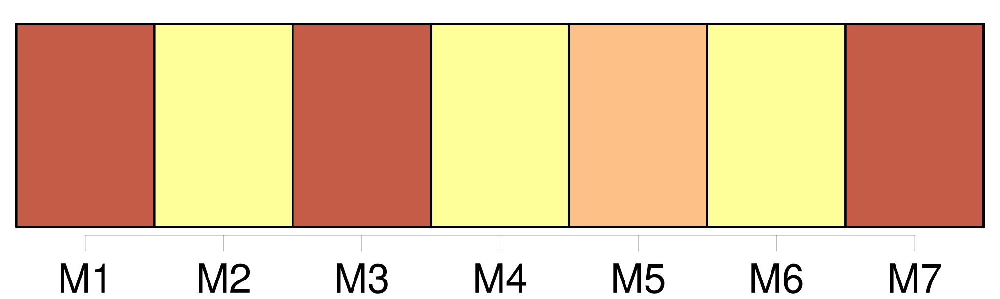

Longueur nb maillons : 23 mentions |
 |
L'enfant, à tout âge, doit honneur et respect à [ses père] et mère. [3 phrases]
[Le père seul] exerce cette autorité durant le mariage. [1 phrases]
L'enfant ne peut quitter la maison paternelle sans la permission de [son père] , si ce n'est pour enrôlement volontaire, après l'âge de dix-huit ans révolus. [1 phrases]
[Le père] [qui] aura des sujets de mécontentement très-graves sur la conduite d'un enfant, aura les moyens de correction suivans. [1 phrases]
Si l'enfant est âgé de moins de seize ans commencés, [le père] pourra le faire détenir pendant un temps qui ne pourra excéder un mois ; et, à cet effet, le président du tribunal d'arrondissement devra, sur [sa] demande, délivrer l'ordre d'arrestation. [1 phrases]
Depuis l'âge de seize ans commencés jusqu'à la majorité ou l'émancipation, [le père] pourra seulement requérir la détention de [son] enfant pendant six mois au plus ; [il] s'adressera au président dudit tribunal, qui, après en avoir conféré avec le commissaire du Gouvernement, délivrera l'ordre d'arrestation ou le refusera, et pourra, dans le premier cas, abréger le temps de la détention requis par [le père] [2 phrases]
[Le père] sera seulement tenu de souscrire une soumission de payer tous les frais, et de fournir les alimens convenables. [1 phrases] [Le père] est toujours [maître d'abréger la durée de la détention par lui ordonnée ou requise] [2 phrases]
Si [le père] est remarié, il sera tenu, pour faire détenir [son] enfant du premier lit lors même qu'il serait âgé de moins de seize ans, de se conformer à l'article 377. [5 phrases]
Ce commissaire se fera rendre compte par celui près le tribunal de première instance, et fera son rapport au président du tribunal d'appel qui, après en avoir donné avis [au père] , et après avoir recueilli tous les renseignemens, pourra révoquer ou modifier l'ordre délivré par le président du tribunal de première instance. [1 phrases]
Les articles 376, 377, 378 et 379 seront communs [aux pères] et mères des enfans naturels légalement reconnus. [1 phrases]
[Le père] durant le mariage, et, après la dissolution du mariage, le survivant [des père] et mère, auront la jouissance des biens de leurs enfans jusqu'à l'âge de dix-huit ans accomplis, ou jusqu'à l'émancipation qui pourrait avoir lieu avant l'âge de dix-huit ans. [7 phrases]
Cette jouissance n'aura pas lieu au profit de celui [des père] et mère contre lequel le divorce aurait été prononcé ; et elle cessera à l'égard de la mère dans le cas d'un second mariage. [1 phrases]
Elle ne s'étendra pas aux biens que les enfans pourront acquérir par un travail et une industrie séparés, ni à ceux qui leur seront donnés ou légués sous la condition expresse que [les père] et mère n'en jouiront pas. [240 phrases]
Tout tuteur, autre que [le père] et la mère, peut être tenu, même durant la tutelle, de remettre au subrogé tuteur des états de situation de sa gestion, aux époques que le conseil de famille aurait jugé à propos de fixer, sans néanmoins que le tuteur puisse être astreint à en fournir plus d'un chaque année. |
|
Il est possible de télécharger la ressource sur la page Ortolang |
Si vous avez des questions ou vous voyez des erreurs, merci d'envoyer un mail à silvia.federzoni89@gmail.com |